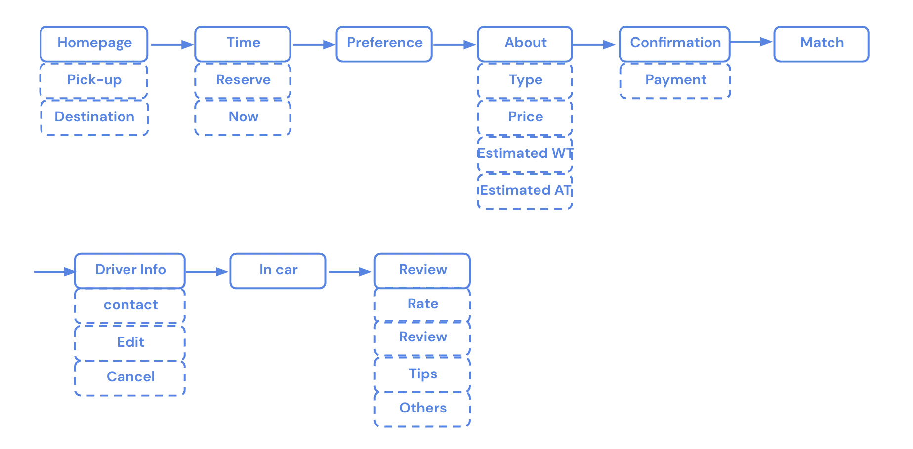

Youride
The Problem & Solution
For most ride-sharing apps, college student are rising target
audience. However, the current apps do not completely reflect what
college students need under the condition that they have limited
budget. Thus, I decided to build a ride-sharing app that better
help college students find the car they need by asking their
preference before their ride.
Roles & Responsibilities:
User research, wireframing, prototyping, and usability test
Project Duration:
From Oct. 2022 to Nov. 2022
Insights from listening sessions:
Some user would like to chat with the driver, but some prefer
quiter environment
→ The app should enable the user to inform the driver their
preferred way of interaction without telling the driver in person.
College students usually choose the cheapest type of car but tend
to find out that the car does not meet her expectation after the
car arrives
→ The app should recommend the car types based on user’s
individual needs.
Some user feel bad to express their thoughts about the ride
→ The app should make sure that the review session is anonymous.
Competitor analysis:
People from all over the globe use different ride-sharing apps.
Therefore, I include 4 different ride-sharing apps, Uber, Lyft,
Cabify and Gett, from different countries in my competitor
analysis. The first two apps share many features in common. They
provides users with detailed information about the ride and
organize the information in a consistent way. While the other two
apps either provides little information or present it in an
illogical way.

Persona:
For most ride-sharing apps, their original target users are
business men/women, who would like to save time by using these
apps. Unlike those original users, college students are more
money-sensitive. Ride-sharing apps are not for daily use. Instead,
they usually use ride-sharing apps only when public transportation
is not available or when there is someone else to split the bill.
It is important to separate college users’ needs from those
business men/women’s needs because the final design should cater
to our specific customers’ needs.
User Journey:
This user journey indicate the process of taking this user from
her dorm to the closest airport. My design will focus on improving
the stage of “Select the car and request the ride” and
“Arrive the destination” by simplifying and clarifying the
information that present to the users and the actions they need to
take.

Information Architecture:
As the information architecture shows, the user flow is long and
mainly linear. That is to say, users have to run through all of
the steps to successfully reserve a ride. It is critical to
display these big amount of information in an organized way so
that they do not overwhelmed the users.

Prototype:

Usability testing: Currently in Progress
I’ve build a prototype based on the insights that I got from the
user research. In the following days, I will conduct a usability
test and collect the feedback of my users to improve the app.